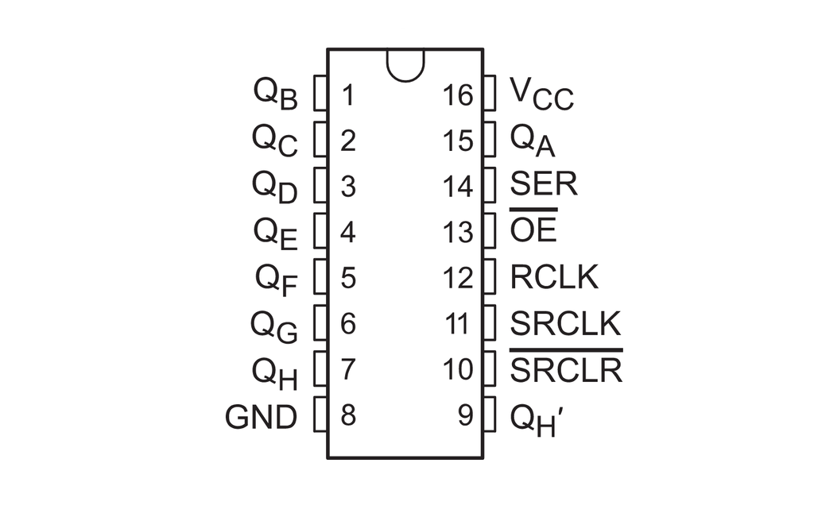

The 3x AAA batteries are connected in series giving 4.5 V (3x 1.5 V) and a capacity of 1000 mAh.
The Pico accepts 1.8 V to 5.5 V via the VSYS pin. The 74HC595 operates between 2.0 V and 6.0 V. The LEDs (red, orange and yellow) operate between 1.8 V and 2.2 V. All are within the capacity of the chosen batteries.
The 74HC595 is an 8-bit shift register (SR) driven by an SPI TX connection. The SPI (Serial Peripheral Interface) works by pulsing (or not pulsing) the data pin synchronously with the clock pin to commuicate the desired byte into the register bit by bit. Once Transferred the shift register assigns the HIGH or LOW voltage to the output pins.

8x LEDs are arranged in a 2x4 grid.
| [GREEN] | [YELLOW] | [YELLOW] | [YELLOW] |
| [RED] | [BLUE] | [BLUE] | [BLUE] |
The green and red lights will indicate correct and incorrect and the yellow and blue will represent the computer and the player. Given the 3.3 V regulated output voltage from the Pico and the variation in percieved brigtness the resistors used were determined by trial and error..
| Colour | Forward Voltage | Target Current | Resistor Value |
|---|---|---|---|
| Green | V | mA | Ω |
| Yellow | V | mA | Ω |
| Red | V | mA | Ω |
| Blue | V | mA | Ω |
The potentiometer selected is a panel mount variant with 10 kΩ resistance. This along with the fitted red T18 soft touch knob will be used as player input.
A 16 mm burgundy panel mount momentary push button has been selected as the other player input.
The Raspberry Pi Pico is a microcontroller design for physical computing projects like this. It will be coded in C/C++ for this project.